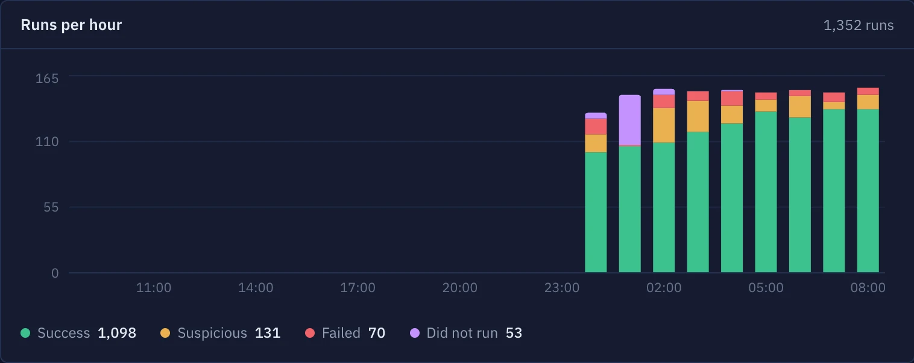

Servers and jobs, one tool
Watching when nobody is
Don’t wait for a client to report an outage or ask for a backup that was never made. Act before an error becomes a question of trust.
Last night, 6 client servers
Alerts that find you
No tab to keep open. You hear about it where you already are.
Hypermonitor 03:02
backup-db failed on db-prod-1
Out of disk space on /var: 97% when it failed, 71% five minutes before.
Open the runTelegram
A bot in your group
Straight to your phone
Discord
A post in your channel
To you or the whole team
Webhooks
JSON to your own systems
{ "job": "backup-db", "status": "failed",
"cause": "disk_space", "mount": "/var" }Monitoring your servers in 3 steps
-
Create your account
you@company.com Start freeSign up
-
$ curl -fsSL https://releases.hypermonitor.net/install.sh | sudo bash -s -- --token itk_7Hq… ok agent registered as db-prod-1 ok found 6 jobs, 2 backupsPaste one command
-
pg_dump shopBackuprestic backup /srvBackupartisan schedule:runlogrotate
Monitoring 3 jobs on db-prod-1
Pick your jobs
- No server to host
- No public IP
- No open ports
Start free, today
Free for the first teams. Tell us what to fix next.
Early access
Free
from today, no card
- Servers, jobs and failure analysis
- Jobs found for you
- Alerts on every channel
- Support from the people building it
After launch
Plans
announced before launch
- Everything in early access
- Organizations and roles for each client
- Alerts in the tools your team already uses
- Signed webhooks for your own systems
- A public API
- AI-assisted failure analysis
- Longer metric and run history
- Reports you can send to your clients
- A free plan that stays
Questions
Do I need to host anything?
No. Hypermonitor runs in our cloud. The agent only sends data out over HTTPS: no public IP, no open ports.
Where do alerts go?
Telegram, Discord, WhatsApp, email or a webhook to your own systems. One alert per problem, not per run.
Do you store my backups?
No. Only facts about each run: exit code, duration, size, file count and checksum.
How is the cause worked out?
By rules you can read: the error line is matched to known failures and checked against the server’s metrics at the second it failed.
Does the agent need root?
Only to install it as a service. Wrapping a job with hmagent exec does not.
Which systems are supported?
Linux on amd64 for the agent. Ping URLs work from anything that can make an HTTP request.

Start using Hypermonitor
We are opening Hypermonitor to a small group of teams first, free, in exchange for honest feedback.
One email with your login. No newsletter.